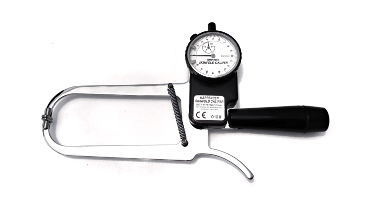

1. Измерване на процент подкожни мазнини чрез метода на калипометрията. Измерването се извършва на място,
чрез специален уред измерваме дебелината на кожната гънка на седем точно определени места по тялото.
За случая използваме шублер на фирмата Harpenden,
 който е доказал се като стандарт в бранша.
Този инструмент се използва от професионалистите в индустрията повече от 40 години.
Видео